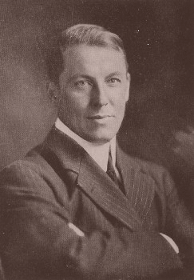
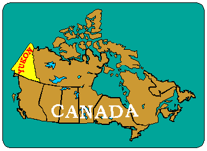
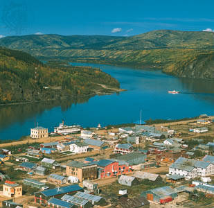
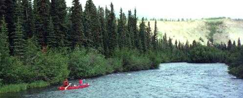
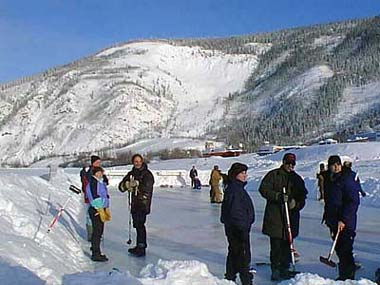
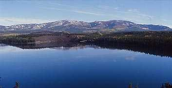
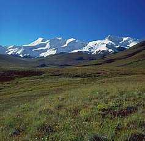

|
O ttulo "Where
Silence Has Lease" (que poderia ser traduzido como "Onde
o Silncio Fez Morada") foi tirado de um poema escrito
por Robert W. Service (foto), o poeta canadense mais
popular do incio do sculo 20. Nascido
na Inglaterra de pais escoceses, passou a infncia na Esccia e
emigrou com a famlia para o Canad em 1896.
Entre 1904 e 1912,
Robert Service trabalhou em um banco no territrrio de Yukon,
no Canad. L, escreveu uma srie de poemas sobre esse
"norte gelado", de um dos quais -- "A Magia de
Yukon" (The Spell of Yukon) -- foi tirado o ttulo do
episdio da Nova Gerao.

Robert Service
A
histria de Yukon
Para entender o poema,
preciso saber um pouco da histria e das caractersticas do
lugar. Yukon fica no noroeste do Canad, na divisa com o Alaska (veja
mapa abaixo). A regio central do territrio um plat
banhado pelo rio Yukon e cercado pelas montanhas mais altas
e espetaculares da Amrica do Norte, incluindo o pico mais alto
do Canad, o Monte Logan, com 5.951 metros de altitude. A
temperatura do lugar pode variar entre 35 C no vero e -51
(isso mesmo, 51 graus negativos) no inverno.
O
primeiro europeu a visitar Yukon --originalmente habitado por ndios
americanos-- foi Sir John Franklin, que chegou em 1825 em
busca de uma passagem para o Pacfico. Chegando l, percebeu que
os ndios utilizavam flechas com pontas de metal. Com base nessa
informao, a Companhia Hudson's Bay enviou John Bell
para explorar o local em busca de metais. Bell construiu dois
fortes, o comrcio com os ndios floresceu e foram surgindo vrios
entrepostos.

Yukon faz divisa com o Alaska
A
corrida do ouro
Em
1870 foi descoberto ouro num dos afluentes do rio Yukon, o que
provocou a vinda de garimpeiros, comerciantes e de um destacamento
da Polcia Montada canadense. O auge dessa corrida do ouro foi em
1898, quando foram descobertos ricos depsitos do metal no riacho
Bonanza, afluente do Rio Klondike. O grande afluxo de pessoas para
aquela regio fez surgir a cidade de Dawson, que chegou a
ter 30 mil habitantes na poca. O Congresso canadense decidiu ento
separar aquela regio do restante do noroeste do pas,
concedendo-lhe o status de territrio, com capital em Dawson.
Mas
a corrida do ouro durou pouco: em 1900 a maior parte dos
garimpeiros individuais j havia sido substituda por grandes
companhias mineradoras. A populao caiu de 27 mil habitantes,
em 1901, para 5 mil em 1911. Foram extradas enormes quantidades
de ouro, prata, chumbo e outros minerais no territrio de Yukon,
e ainda h vastas reservas no exploradas. Estimulada pelo
governo federal do Canad, a indstria de minrios cresceu
muito a partir da dcada de 1950. Em 1953, a capital do territrio
mudou para Whitehorse, cidade surgida durante a II Guerra
Mundial em conseqncia de projetos militares, como a construo
de uma estrada para o Alaska.

A cidade de Dawson e o rio Yukon
Yukon
vive agora do turismo
A
indstria de minrios passou a declinar no final do sculo 20.
Apesar de todo o crescimento, boa parte do territrio permaneceu
intocada, com fauna abundante, pois a terra recoberta por gelo
permanente dificultou a explorao, tanto de minrios quanto da
agricultura. Toda essa rea foi preservada e, hoje, o turismo
o maior setor da economia local. Robert Service sempre
associado a Yukon e existe at um camping com seu nome (foto
abaixo).

Camping Robert Service, em Whitehorse:
homenagem ao poeta

Turistas no rio Yukon congelado no
inverno

Lago Schwatka, em Whitehorse
A
magia de Yukon
No poema de onde foi
tirado o ttulo do episdio, Robert Service fala sobre a magia,
a beleza e o silncio dessa remota regio de nosso planeta. Ele
fala na voz de um garimpeiro, como se fosse um daqueles
aventureiros que foi em busca do ouro e acabou se apaixonando pelo
lugar, pelas montanhas, pelas florestas "onde o silncio fez
morada".
Vendo as fotos,
entende-se rapidamente por que o poeta dedicou tantos poemas a
esse belssimo lugar. Obviamente,
o ttulo do episdio da Nova Gerao refere-se quela
suposta regio da galxia (na verdade apenas um "laboratrio",
onde aquele ser fazia experincias com a Enterprise), aquele espao
vazio, em que no havia absolutamente nada, apenas o silncio.
Leia abaixo o poema no original e uma
traduo livre. O verso "where silence has lease" est
na ltima estrofe.

Yukon: "onde o silncio fez morada"
|
A Magia
de Yukon
Eu queria o ouro e o
procurei,
Arranhei o solo e me sujei feito um
escravo.
Lutei contra a fome e a doena;
Joguei minha juventude numa cova.
Eu queria o ouro e o consegui
Ele surgiu com a sorte no ltimo
outono,
Ainda assim, a vida no o que
pensava,
E, de alguma forma, o ouro no
tudo.
No! H o lugar
(voc viu?)
o lugar mais amaldioado que
conheo,
Desde as grandes e estonteantes
montanhas que o protegem
At os os vales l embaixo,
profundos como a morte.
Alguns dizem que Deus estava cansado
quando o fez;
Outros dizem que bom evit-lo;
Talvez; mas h os que no o
trocariam
Por nenhum outro lugar na Terra e
eu sou um deles.
Voc vai para ficar
rico (um bom motivo);
No comeo, voc se sente exilado;
Voc odeia o lugar por uma estao,
E depois fica ainda pior.
Mas ele prende voc como alguns
pecados fazem
E, de inimigo, transforma voc em
amigo;
Parece que foi assim desde o incio;
Parece que ser assim at o fim.
J estive no topo de
abismos
Cheios de silncio em toda a sua
verticalidade
Vi o Sol, grande e enrgico,
projetar-se
Em vermelho e dourado, e depois ir
sumindo
At que a Lua surgisse, fazendo
brilhar os picos perolados,
E as estrelas deslizassem de corpo e
alma;
E pensei estar com certeza sonhando,
Com a paz do mundo reinando sobre
tudo.
O vero nunca
houve to doce;
Os bosques ensolarados, todos
impressionantes;
O peixe pulando no rio,
O veado dormindo na colina.
A vida forte, nunca domesticada;
A regio inexplorada onde vivem os
alces;
O frescor, a liberdade, a distncia
Oh, Deus, como estou apaixonado por
tudo isso!
O inverno! a
claridade ofuscante,
A terra branca e compacta, como um
tambor,
O frio temor que o persegue e o
encontra,
O silncio que deixa voc mudo.
A neve, mais antiga que a histria,
Os bosques, onde estranhas sombras se
inclinam;
O silncio, o luar, o mistrio,
J quis dizer-lhes adeus, mas no
posso.
H um lugar onde as
montanhas no tm nome,
E os rios correm Deus sabe para onde;
E h vidas errantes, sem rumo
E mortes pendendo por um fio;
H sofrimentos dos quais ningum
sabe;
H vales sem gente, silentes, tranqilos;
H um lugar oh, ele chama, ele
acena,
E eu quero voltar e voltarei.
Esto acabando com o
meu dinheiro;
Estou cansado de tomar champagne.
Graas a Deus! quando eu estiver sem
um tosto
Subo de novo as montanhas de Yukon.
Lutarei e pode apostar que no
ser fingimento;
o inferno! mas j estive l;
E muito muito melhor que isto aqui
Ento irei para Yukon mais uma vez.
H ouro e ele est
me provocando,
Est me atraindo como outrora;
Mas no bem o ouro que eu quero.
O que quero ir l encontr-lo, o
que quero
o lugar, grandioso, largo, l em
cima, longnquo,
So as florestas onde o silncio
fez morada;
a beleza que me enche de assombro,
o silncio que me enche de paz.
The Spell
of the Yukon
I wanted the gold, and I
sought it,
I scrabbled and mucked like a slave.
Was it famine or scurvy -- I fought it;
I hurled my youth into a grave.
I wanted the gold, and I got it --
Came out with a fortune last fall, --
Yet somehow life's not what I thought it,
And somehow the gold isn't all.
No! There's the land.
(Have you seen it?)
It's the cussedest land that I know,
From the big, dizzy mountains that screen it
To the deep, deathlike valleys below.
Some say God was tired when He made it;
Some say it's a fine land to shun;
Maybe; but there's some as would trade it
For no land on earth -- and I'm one.
You come to get rich
(damned good reason);
You feel like an exile at first;
You hate it like hell for a season,
And then you are worse than the worst.
It grips you like some kinds of sinning;
It twists you from foe to a friend;
It seems it's been since the beginning;
It seems it will be to the end.
I've stood in some
mighty-mouthed hollow
That's plumb-full of hush to the brim;
I've watched the big, husky sun wallow
In crimson and gold, and grow dim,
Till the moon set the pearly peaks gleaming,
And the stars tumbled out, neck and crop;
And I've thought that I surely was dreaming,
With the peace o' the world piled on top.
The summer -- no sweeter
was ever;
The sunshiny woods all athrill;
The grayling aleap in the river,
The bighorn asleep on the hill.
The strong life that never knows harness;
The wilds where the caribou call;
The freshness, the freedom, the farness --
O God! how I'm stuck on it all.
The winter! the
brightness that blinds you,
The white land locked tight as a drum,
The cold fear that follows and finds you,
The silence that bludgeons you dumb.
The snows that are older than history,
The woods where the weird shadows slant;
The stillness, the moonlight, the mystery,
I've bade 'em good-by -- but I can't.
There's a land where the
mountains are nameless,
And the rivers all run God knows where;
There are lives that are erring and aimless,
And deaths that just hang by a hair;
There are hardships that nobody reckons;
There are valleys unpeopled and still;
There's a land -- oh, it beckons and beckons,
And I want to go back -- and I will.
They're making my money
diminish;
I'm sick of the taste of champagne.
Thank God! when I'm skinned to a finish
I'll pike to the Yukon again.
I'll fight -- and you bet it's no sham-fight;
It's hell! -- but I've been there before;
And it's better than this by a damsite --
So me for the Yukon once more.
There's gold, and it's
haunting and haunting;
It's luring me on as of old;
Yet it isn't the gold that I'm wanting
So much as just finding the gold.
It's the great, big, broad land 'way up yonder,
It's the forests where silence has lease;
It's the beauty that thrills me with wonder,
It's the stillness that fills me with peace.
|
|